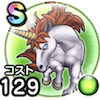

ユニコーン
ほこらこころ最大コスト+4スキルHP回復効果+10%じゅもんダメージ+5%メラ属性耐性+10%【夜間】じゅもんダメージ+3%HP50%以下のときスキルHP回復効果+2% / 9.5点
くわしい特徴
【ランク特殊効果】 こころ最大コスト+4スキルHP回復効果+10%じゅもんダメージ+5%メラ属性耐性+10%【夜間】じゅもんダメージ+3%HP50%以下のときスキルHP回復効果+2%

ほこらこころ最大コスト+4スキルHP回復効果+10%じゅもんダメージ+5%メラ属性耐性+10%【夜間】じゅもんダメージ+3%HP50%以下のときスキルHP回復効果+2% / 9.5点
【ランク特殊効果】 こころ最大コスト+4スキルHP回復効果+10%じゅもんダメージ+5%メラ属性耐性+10%【夜間】じゅもんダメージ+3%HP50%以下のときスキルHP回復効果+2%